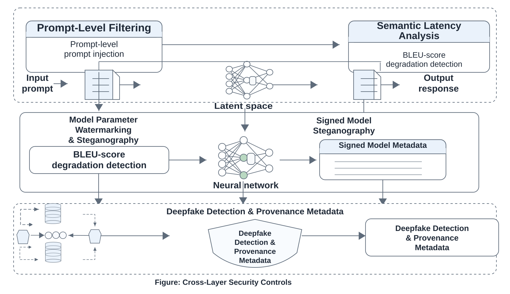
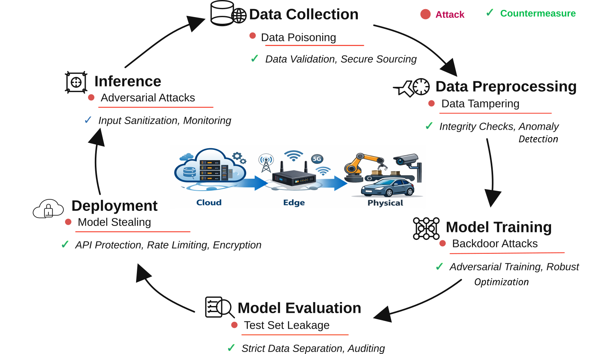
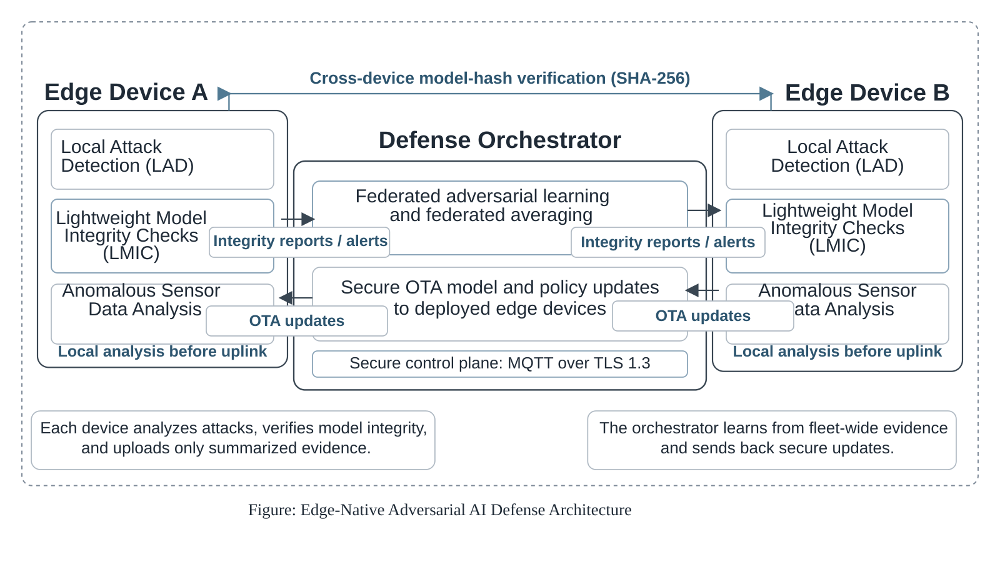
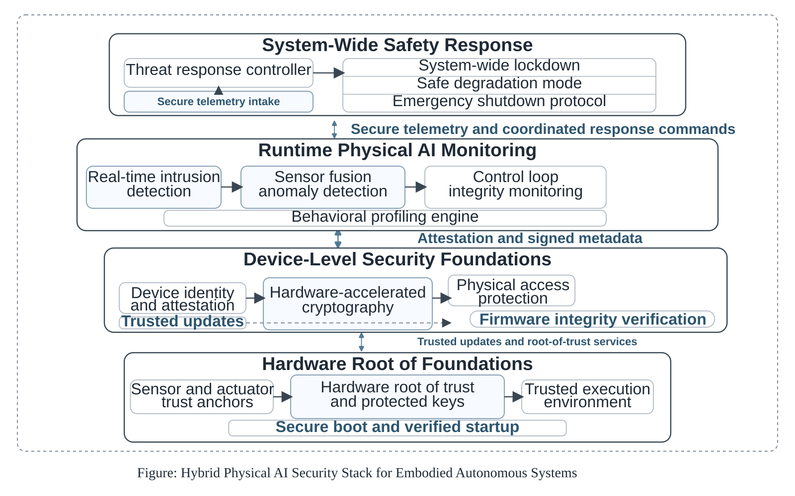
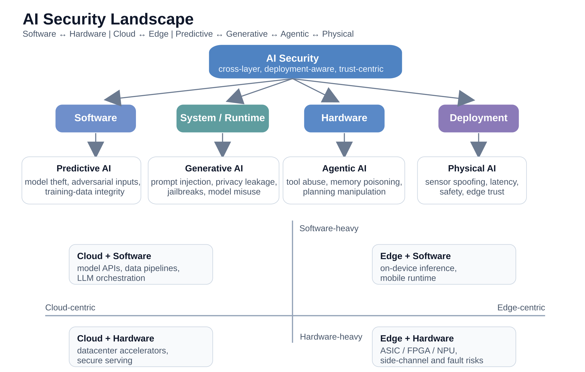
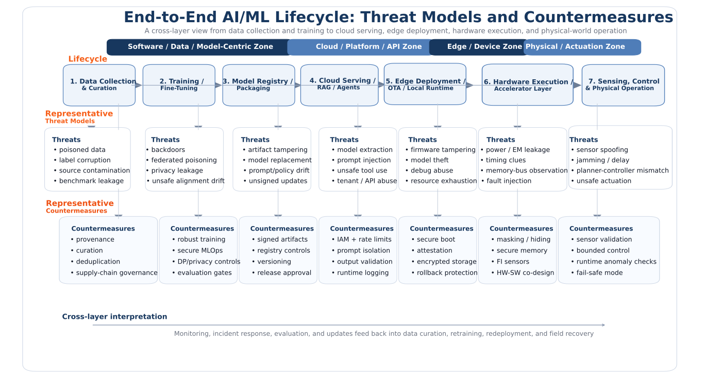

Generative AI
Prompt-layer security and containment
Prompt injection, jailbreaks, model misuse, watermarking, alignment, and safe integration remain central challenges.
A structured portal for navigating AI security across software, hardware, cloud, edge, predictive, generative, agentic, and physical AI, with enough clarity for newcomers and enough depth for serious technical reading.

This homepage is designed as a guided entry point: start with the research map, move into direct topic pages, strengthen the needed systems background in dedicated foundation sections, and follow the living research notes for current directions.
These entry blocks make it easy to choose the right next step, whether you want a high-level overview, a direct topic page, a recent note, or a curated reading list.
Start with the complete structure of AI security topics and see how the portal is organized.
Read short, current research-watch notes on emerging papers, attack surfaces, and defense gaps.
Open curated books, papers, tools, and study paths for structured learning and reference.
See the cross-layer perspective, technical strengths, and research background behind this website.
These are the three core entry sections highlighted on the homepage. Open the section directly, or enlarge the figure for a quick visual overview before diving in.

Prompt injection, jailbreaks, model misuse, watermarking, alignment, and safe integration remain central challenges.

Edge deployment makes physical exposure, firmware trust, side-channel leakage, and constrained-system design highly relevant.

In embodied systems, sensing, actuation, latency, and cyber risk interact, so trust becomes a full-system design question.
Use these topic links to move directly into the domain that matches your interest, background, or current research question.

This visual summary connects model-level vulnerabilities, hardware risks, deployment realities, and countermeasure design into one compact landscape.

This broader system view complements the landscape above and helps connect software, cloud, edge, hardware, and physical deployment stages into one coherent learning path.
Detailed foundational modules on AI hardware, memory hierarchy, accelerators, inference systems, heterogeneous execution, and distributed infrastructure are organized under the Research section. This keeps the homepage focused while making the deeper technical background easy to access whenever it is needed.
This homepage window stays complementary to the Research page by tracking faster-moving developments across academic work, industrial translation, and ecosystem-facing releases.
New papers, conference shifts, evaluation trends, and technical ideas that deserve attention before they become part of a static survey.
Full story IndustryIndustrial products, implementation directions, and engineering choices that translate secure AI ideas into real systems and deployments.
Full story EcosystemNew company moves, platform launches, and product-release signals that matter when AI security leaves the lab and reaches the market.
Full storyA research-focused portal spanning AI security, hardware trust, Edge/Physical AI, with an emphasis on connecting algorithmic concerns to implementation realities.
Start with the research map for structure, open a domain page for focused reading, use the foundations when you want more technical context, and return to Trending Topics for the newest shifts and open problems.
These short questions help new visitors understand how to navigate the portal and what kind of material they will find here.
Use the site as an overview page, a structured study map, a technical reference, or a place to follow emerging AI-security directions over time.